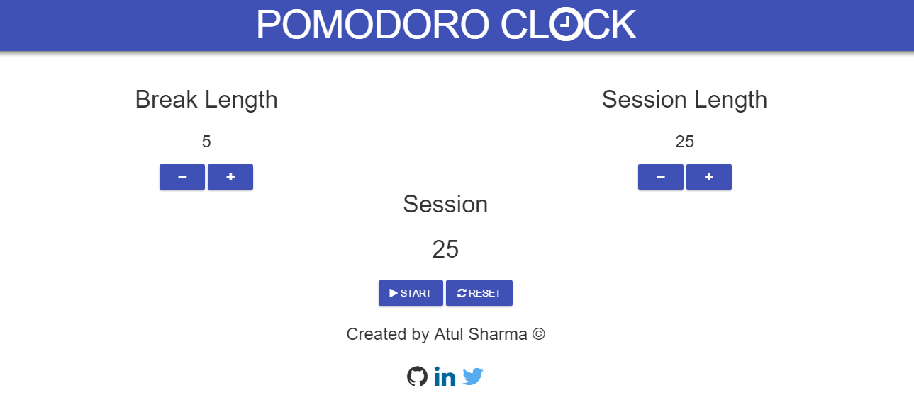
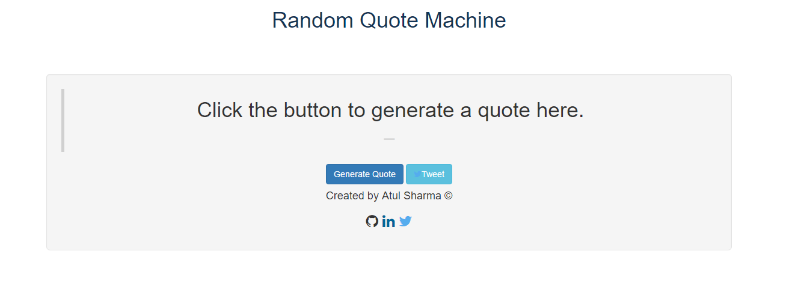

 This is a material design version of Pomodoro clock. You can use Pomodoro clock for time management and project management. Used technologies angular.js, material design.
Random Quoto Machine
 This is a Random Quote Generator Machine.You can generate quote and also tweet your generated quote.Used technologies forismatic API, twitter API.